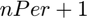
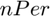
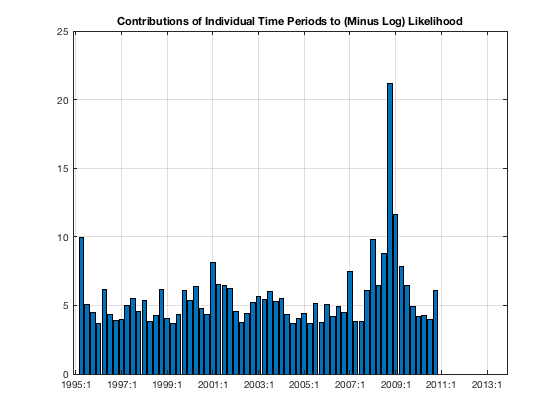

More on Kalman Filter
Run more advanced Kalman filter exercises. Split the data sample into two sub-samples, and pass information from one to the other. Run the filter with time-varying std deviations of some shocks. Evaluate the likelihood function and the contributions of individual time periods to the overall likelihood.
Contents
- Dependencies
- Clear Workspace
- Load the estimated model object and the historical database
- Split the Kalman filter into sub-samples
- Run Kalman Filter with Time Varying Std Devs of Some Shocks
- Evaluate Likelihood Function and Contributions of Individual Time Periods
- Show Variables and Objects Created in This File
Dependencies
Run the following m-files before this one:
Clear Workspace
Clear workspace, close all graphics figures, clear command window, and check the IRIS version.
clear close all clc irisrequired 20180131
Load the estimated model object and the historical database
Load the model object estimated in estimate_params.m, and the historical database created in read_data.
load mat/estimate_params.mat mest load mat/read_data.mat d startHist endHist
Split the Kalman filter into sub-samples
With the range split into two or more sub-samples, and the Kalman filter-smoother executed successively on each of them (using the most recent result as the initial condition for the next run), the smoothed data estimates will differ from those obtained previously (running the filter once on the whole range). This is because the individual runs of the filter of data will be based on different information sets.
The only exception is, obviously, the last sub-sample, which is by construction based on information from the entire range 1..T, and hence identical to the information set when the filter is run just once on the entire range.
When running the Kalman filter on the last sub-sambple, the output database from the previous run, f1, is used to set up initical condition for the filter (instead of the default asymptotic distribution). This is allowed by the fact that the database f1 contains both the point estimates and the MSE matrices.
[~, f0, v0, ~, pe0] = filter(mest, d, startHist:endHist+10, ... 'Relative=', false); N = 15; [~, f1, v1, ~, pe1] = filter(mest, d, startHist:endHist-N, ... 'Relative=', false); f1 [~, f2, v2, ~, pe2] = filter(mest, d, endHist-N+1:endHist, ... 'Relative=', false, 'InitCond=', f1);
Print differences between the smoothed data.
disp('Smoothed estimates differ for the first sub-sample'); dbfun(@maxabs, f0.mean, f1.mean) dbfun(@maxabs, pe0, pe1) disp('Smoothed estimates are identical for the last sub-sample'); dbfun(@maxabs, f0.mean, f2.mean) dbfun(@maxabs, pe0, pe1)
f1 =
struct with fields:
mean: [1x1 struct]
std: [1x1 struct]
mse: [49x13x13 Series]
Smoothed estimates differ for the first sub-sample
ans =
struct with fields:
Short: 0
Infl: 0
Growth: 0
Wage: 0
Y: 0.0024
N: 0.0018
W: 0.0039
Q: 0.0038
H: 0.0028
A: 0.0019
dA: 3.5772e-04
P: 0.0017
R: 2.8891e-06
Pk: 0.0072
Rk: 1.5839e-04
Lambda: 0.0025
dP: 1.2129e-04
d4P: 5.0499e-04
dW: 1.0965e-04
RMC: 0.0042
Mp: 0
Mw: 0
Ey: 4.0658e-04
Ep: 2.7376e-04
Ea: 7.2493e-05
Er: 1.1491e-04
Ew: 8.1703e-04
alpha: 0
beta: 0
gamma: 0
delta: 0
k: 0
pi: 0
eta: 0
psi: 0
chi: 0
xiw: 0
xip: 0
rhoa: 0
rhor: 0
kappap: 0
kappan: 0
Short_: 0
Infl_: 0
Growth_: 0
Wage_: 0
ttrend: 0
std_Mp: 0
std_Mw: 0
std_Ey: 0
std_Ep: 0
std_Ea: 0
std_Er: 0
std_Ew: 0
corr_Ep__Er: 0
ans =
struct with fields:
Short: 0
Infl: 0
Growth: 0
Wage: 0
Smoothed estimates are identical for the last sub-sample
ans =
struct with fields:
Short: 0
Infl: 0
Growth: 0
Wage: 0
Y: 6.6613e-16
N: 4.4409e-16
W: 2.6645e-15
Q: 4.4409e-16
H: 8.8818e-16
A: 6.6613e-16
dA: 2.2204e-16
P: 6.6613e-16
R: 0
Pk: 2.2204e-15
Rk: 5.5511e-17
Lambda: 6.1062e-16
dP: 2.2204e-16
d4P: 4.4409e-16
dW: 2.2204e-16
RMC: 2.2204e-16
Mp: 0
Mw: 0
Ey: 1.3010e-16
Ep: 9.0206e-17
Ea: 3.2960e-17
Er: 7.8659e-17
Ew: 1.1623e-16
alpha: 0
beta: 0
gamma: 0
delta: 0
k: 0
pi: 0
eta: 0
psi: 0
chi: 0
xiw: 0
xip: 0
rhoa: 0
rhor: 0
kappap: 0
kappan: 0
Short_: 0
Infl_: 0
Growth_: 0
Wage_: 0
ttrend: 0
std_Mp: 0
std_Mw: 0
std_Ey: 0
std_Ep: 0
std_Ea: 0
std_Er: 0
std_Ew: 0
corr_Ep__Er: 0
ans =
struct with fields:
Short: 0
Infl: 0
Growth: 0
Wage: 0
Run Kalman Filter with Time Varying Std Devs of Some Shocks
Use the option Vary= to temporarily change some of the std deviations (or also cross-correlations) within the filtered sample. The estimates of unobservables and shocks will obviously change: Compare the estimated Ep shocks from the previous Kalman filter (with fixed std deviations) and the Kalman filter with time-varying std_Ep.
j = struct( );
j.std_Ep = tseries( );
j.std_Ep(endHist-9:endHist-5) = linspace(0.00, 0.4, 5);
[~, f1] = filter(mest, d, startHist:endHist, 'Vary=', j);
[j.std_Ep, f1.mean.Ep, f0.mean.Ep]
ans =
tseries object: 73-by-3
1995Q2: NaN -0.001157655 -0.001196078
1995Q3: NaN -0.002590551 -0.0009767455
1995Q4: NaN -0.0009212505 0.000591179
1996Q1: NaN -0.001204264 0.0002191671
1996Q2: NaN -0.00372323 -0.002374838
1996Q3: NaN -0.0002864607 0.001000264
1996Q4: NaN -0.001901237 -0.0006643238
1997Q1: NaN -0.0008221908 0.0003749656
1997Q2: NaN -0.001888295 -0.0007225975
1997Q3: NaN -0.003426451 -0.002285491
1997Q4: NaN -0.0007976768 0.0003239242
1998Q1: NaN -0.00431303 -0.003206522
1998Q2: NaN -0.0009051125 0.0001896645
1998Q3: NaN -0.0003601914 0.0007254957
1998Q4: NaN -0.003075383 -0.001996717
1999Q1: NaN -8.68115e-05 0.0009864544
1999Q2: NaN -0.001562807 -0.0004936699
1999Q3: NaN -0.002426441 -0.001360429
1999Q4: NaN -0.0008938641 0.0001698194
2000Q1: NaN 0.00301119 0.004073189
2000Q2: NaN -0.003600624 -0.002539775
2000Q3: NaN 0.0003677959 0.001427951
2000Q4: NaN -0.001476847 -0.0004169741
2001Q1: NaN 0.00185713 0.002917112
2001Q2: NaN -4.269422e-05 0.001017797
2001Q3: NaN -0.00430092 -0.003239486
2001Q4: NaN -0.001348267 -0.0002853929
2002Q1: NaN -4.121691e-05 0.00102369
2002Q2: NaN 6.958025e-05 0.00113725
2002Q3: NaN -0.001064215 7.130073e-06
2002Q4: NaN 0.0005946693 0.00167085
2003Q1: NaN 0.0008641859 0.001946683
2003Q2: NaN -0.005435381 -0.004344666
2003Q3: NaN 0.001448342 0.002549722
2003Q4: NaN -0.001157025 -4.182807e-05
2004Q1: NaN 0.002780396 0.003913473
2004Q2: NaN -0.0003737175 0.0007824742
2004Q3: NaN -0.001849725 -0.0006636801
2004Q4: NaN -0.0003794243 0.000845137
2005Q1: NaN 0.001948832 0.003223024
2005Q2: NaN -0.002871883 -0.001533844
2005Q3: NaN 0.003881094 0.005301104
2005Q4: NaN -0.00188925 -0.0003642961
2006Q1: NaN -0.001222748 0.0004360716
2006Q2: NaN 0.001262701 0.003091432
2006Q3: NaN -0.001509968 0.0005329713
2006Q4: NaN -0.004214323 -0.001903854
2007Q1: NaN 0.00622476 0.008864955
2007Q2: NaN -0.004119115 -0.001080282
2007Q3: NaN -0.005108975 -0.001602006
2007Q4: NaN -0.006063436 -0.002031854
2008Q1: NaN -0.0012338 0.003338625
2008Q2: NaN -0.0008340996 0.004203541
2008Q3: 0 0 0.0052408
2008Q4: 0.1 -0.01983933 -0.01478491
2009Q1: 0.2 0.001312369 0.005910067
2009Q2: 0.3 -0.006264358 -0.002208319
2009Q3: 0.4 -0.003039557 0.0004822799
2009Q4: NaN -0.007102629 -0.004065679
2010Q1: NaN -0.000856905 0.001759088
2010Q2: NaN -0.0006244862 0.001634099
2010Q3: NaN -0.002150195 -0.0001934138
2010Q4: NaN -0.007735245 -0.006036109
2011Q1: NaN NaN 0
2011Q2: NaN NaN 0
2011Q3: NaN NaN 0
2011Q4: NaN NaN 0
2012Q1: NaN NaN 0
2012Q2: NaN NaN 0
2012Q3: NaN NaN 0
2012Q4: NaN NaN 0
2013Q1: NaN NaN 0
2013Q2: NaN NaN 0
'' 'Cost Push Shock' 'Cost Push Shock'
user data: empty
Evaluate Likelihood Function and Contributions of Individual Time Periods
Run the function loglik( ) to evaluate the likelihood function. This function calls the very same Kalman filter as the function filter( ). The first output argument returned by loglik( ) is minus the logarithm of the likelihood function; this value is also used as a criterion to be minimized (which means maximizing likelihood) within the function estimate( ).
Set the option ObjDecomp=true to obtain not only the overall likelihood, but also the contributions of individual time periods. They are stowed in a column vector with the overall likelihood at the top; the length of the vector is therefore  where  is the number of periods over which the filter is run.
range = startHist:endHist+10; nPer = length(range) mll = loglik(mest, d, range, 'Relative=', false, ... 'ObjDecomp=', true); size(mll)
Because there were no observations available in the input database d in the last 10 periods of the filter range, i.e. endHist+1:endHist+10, the contributions of these last 10 periods are zero.
mll
Adding up the individual contributions reproduces, of course, the overall likelihood. The following two numbers are the same (up to rounding errors):
mll(1) sum(mll(2:end))
Visualize the contributions by converting them to a tseries object, and plotting as a bar graph. Large bars denote periods where the model performed poorly (rememeber, this is MINUS the log likelihood, ie. the larger the number the smaller the actual likelihood). Again, the last 10 periods are zeros because no observations were available in the input database in those.
x = tseries(range, mll(2:end)); bar(x); grid on; title('Contributions of Individual Time Periods to (Minus Log) Likelihood');
nPer =
73
ans =
74 1
mll =
352.9612
9.9503
5.0393
4.4839
3.6867
6.1652
4.3730
3.9290
3.9484
4.9862
5.5250
4.5446
5.3863
3.8456
4.2384
6.1810
4.0255
3.6727
4.3557
6.0550
5.3303
6.4054
4.7707
4.3596
8.0969
6.5429
6.4399
6.2084
4.5691
3.7560
4.4403
5.2425
5.6451
5.4568
6.0202
5.2685
5.5157
4.3413
3.6576
4.0793
4.3999
3.7106
5.1212
3.7563
5.0647
4.1894
4.9356
4.4621
7.4583
3.8506
3.8373
6.0688
9.7746
6.4635
8.8161
21.1460
11.6317
7.8568
6.4833
4.9257
4.1563
4.2286
3.9867
6.0987
0
0
0
0
0
0
0
0
0
0
ans =
352.9612
ans =
352.9612
 Show Variables and Objects Created in This File
whos
Name Size Bytes Class Attributes N 1x1 8 double ans 1x1 8 double d 1x1 15480 struct endHist 1x1 8 DateWrapper f0 1x1 179944 struct f1 1x1 162504 struct f2 1x1 78792 struct j 1x1 392 struct mest 1x1 90932 model mll 74x1 592 double nPer 1x1 8 double pe0 1x1 3462 struct pe1 1x1 2982 struct pe2 1x1 1926 struct range 1x73 584 DateWrapper startHist 1x1 8 DateWrapper v0 1x1 8 double v1 1x1 8 double v2 1x1 8 double x 73x1 760 tseries